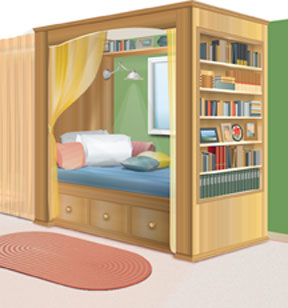
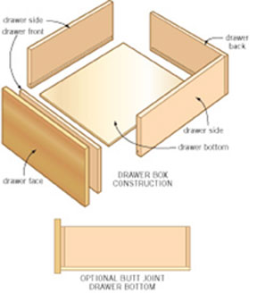
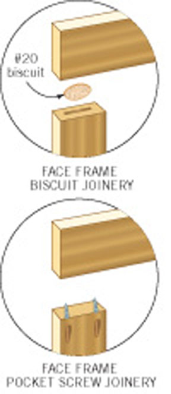
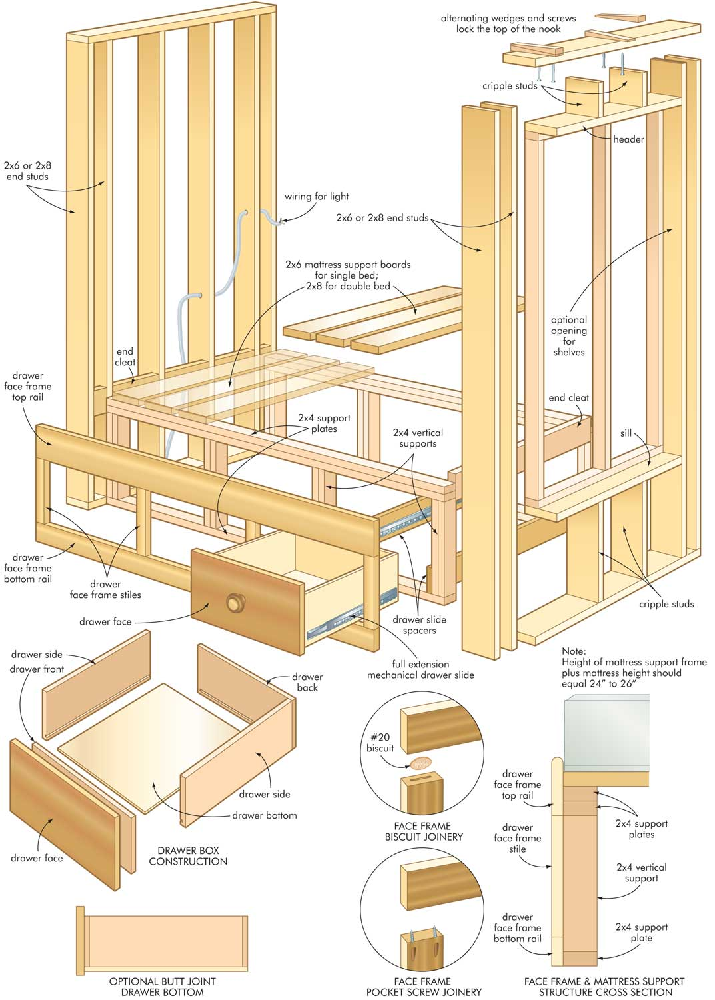

Imagine waking up nestled in a snug alcove designed especially for sleeping. It’s a place where wood and fabrics come together to create a protective nook that’s also a great place to spend time reading, knitting, sketching or thinking. This is the allure of a built-in bed, and it’s a surprisingly easy feature to add to any home. It’s also something that you’ll never find in stores. True built-ins aren’t for sale - they’re one-of-a-kind home improvement projects, requiring site-specific woodworking and renovation skills. Sound difficult? It’s not. Follow the principles here and your built-in bed will make your home a cozier place, while also delivering some efficient storage space.
Every built-in bed is like a tiny room the size of your mattress. That’s why it makes sense to begin planning with two things in mind: the size and shape of the space you have available for your built-in, and the size of the mattress you intend to use. Every other design detail orbits around these two starting points. During this project, you might even want to turn your bedroom into a temporary workshop. That way you’ll never have any doubt about the size of parts required. Simply cut them to fit the various openings and spaces. If necessary, you could cut parts outdoors or in a workshop, but this requires a lot more trouble carrying wood to your saw.
Success with a built-in bed involves three main phases: creating a rough framework, establishing a mattress support surface, then adding decorative details and storage features. Take a close look at the illustrations below. They show the universal construction details necessary to make your built-in bed a reality.
This bed requires two walls - one at each end. You can create a built-in bed anywhere you like, though the work is easier and more economical if you make use of existing interior walls and corners wherever possible. This approach reduces the amount of framing required, while also making it easier to create a solid enclosure.
Consider locating your bed to include a window. Natural light, fresh air and even a bird feeder just outside are all big advantages that a window offers. Remember that the job of securing the walls and support structure is much easier if you locate your bed so it runs parallel to floor and ceiling joists, not perpendicular to them.
Begin by removing baseboards and quarterround on the wall where your bed will go. An effective - but expensive - tool for cutting existing trim while it’s still in place is the Fein Supercut . You also can pull entire lengths of trim off, then cut and replace it where necessary when your bed is done.
Start by framing the partitions that form the head and foot ends of the bed. Although you could use 2-by-4s or 2-by-6s, 2-by-8s are best for two reasons. First, they create walls with a more pleasing thickness for a project this size - narrower studs simply look too thin. Secondly, 2-by-8s offer the option of creating useful shelves within wall cavities. The illustration (found in the image gallery) shows how to arrange individual studs to create an open area in the middle of each wall for storage, plus the horizontal framing members you’ll need to work into your wall to support the mattress. Details shown on the illustration assume a top-of-mattress height of 25 inches above floor surface. You may need to tweak the design, depending on the thickness of your mattress and how high you want it to be. But before you get busy with any of this, you need to understand something fundamental about building a wall to fit between an existing floor and ceiling.
In order to tip your walls up into position, they need to be slightly shorter than the overall height of the room. Stack a couple of 2-by-8 scraps on the floor (to simulate the thickness of the top and bottom plates of your walls), then place the back edge of your tape measure on top of the wood and extend the blade upwards until it hits the ceiling. Lower the blade half an inch, then lock it in position. The length of the extended tape measure (including the tape case body) is the exact length of wall studs you need to cut, but you need to be careful. The ideal height of a wall at one end might be quite different than what’s required at the other. And don’t assume that both walls need to be the same length. Measure in several places, because a sufficient clearance gap along the top of the walls is essential. When it comes time to install and secure walls, you’ll need to fill the top gap with wooden wedges. See “Wedged Walls,” below, for key details.
Before you cut parts for your head- and footboards, you’ll need to do three things: Find the location of the floor and ceiling joists you’ll be anchoring your walls to; determine how wide the walls need to be; and mark exactly where each wall should be located on the floor. Tape or staple enough pieces of cardboard together to make a full-size template of your mattress, plus 2 inches of extra length and width to allow room for tucking sheets and blankets. You’ll also need to add an allowance for the beadboard or wainscoting that you’ll be applying to the wall frames. Place this template on the floor, then use a pencil to mark its location. Assemble each wall frame using four, 3 1⁄2-inch framing nails to secure the end of each 2-by-8 stud. Get someone to help tip each wall up into position, and secure the bottom plate with 4-inch screws driven into the underlying floor joists. Use three screws in every spot where your wall crosses a joist. If the walls run parallel to the floor joists, and don’t line up with them, then be sure to secure the bottom of each wall with construction adhesive, as well as screws. Have a friend push or pull the wall so it’s plumb, then anchor the top end.
There’s no need to use a box spring under the mattress of this bed. Instead, the illustration shows how to create a frame around the interior perimeter of the bed walls that supports either three-quarter-inch plywood or 2-by-8s to support the mattress directly. The main part of this support frame is a low, front wall that spans the distance between the head and foot walls. Build it from 2-by-4s, with studs spaced to accommodate the storage drawers that’ll slide underneath. For best appearance and function, set the front wall 7 1⁄2 inches in from the outside edges of the head and foot walls, creating an inset lip. Next, use 4-inch screws to secure the mattress support cleats around the inside perimeter of the mattress area. Your plywood or wooden slats will rest on these cleats and the front wall, holding the mattress up. If you live in a damp climate, consider using wooden support slats with three-quarter-inch spaces between them for mattress ventilation.
Would you like a reading light in your built-in bed? Now’s the time to rough in the necessary wiring. Locating your bed near an existing outlet makes it easy to supply electricity for your new light. You also could feed wires through the floor frame if your bed is located above an unfinished basement. Another option is to use a wireless LED fixture to light up the alcove.
Next, create the structure that will support the drawers. You’ll get best results if you hang them on the longest lengths of full-extension, mechanical drawer slides you can find. These will be about 28 inches long, and they define the maximum length of drawer you can accommodate underneath your bed. The plans show the simple framework to support these mechanical slides.
You can cover the frame of your bed with beadboard, solid wood wainscoting or even drywall. As you clad the framework, don’t forget to leave an opening for any inset shelves. You’ll find the best way to cover the front wall is with a pre-assembled framework of 1 1⁄2-inch-thick solid wood. Use biscuits, dowels or pocket screws to join the stile and rail members together first, then tilt this frame into place and secure it to the 2-by-4 structure with wood glue and clamps. The top edge of the front wall frame should extend less than half way up the thickness of the mattress and be fully rounded to protect your legs as you get into and out of bed. Now’s the time to add valences, wall-mounted shelves and any inset shelves that fit within the 2-by-8 foot-board frames.
For this project, you’ll use wooden wedges to install and secure the walls that surround the bed. Just smear construction adhesive on the ends of both sides of a pair of wedges, then push them into the gap above your wall sections, one from each side, exactly where a ceiling joist is located. Drive 4-inch deck screws up through the top plate of the wall, through the wedges and into the joist. Repeat the operation wherever there’s a joist to anchor to, and your wall will be rock solid.
These begin as nothing more than boxes with great-looking inside surfaces, and you’ll find half-inch-thick birch-veneered plywood is an excellent material for this application. Cut the top, bottom and back so the completed assembly is 1 inch shorter and narrower than the rough opening you framed for your shelf. Drill holes in the inside face of the sides for adjustable shelf pins, then secure the shelf box within the 2-by-8 wall frame using glue, finishing nails and wooden wedges to fill the gaps and level the shelf box. Finish up by adding trim around the perimeter of the opening, just like you would around a door or window frame.
Making spacious, easy-sliding drawers for a built-in bed is a breeze when you understand three basics: the simplicity of butt-joined corners, the advantage of full-extension mechanical drawer slides, and a little-known trick for achieving proper side clearance between the drawers and their openings.
Start by cutting wood to width for the sides, front and back of each drawer box. Half-inch-thick birch-veneered ply or Baltic birch ply are two excellent drawer-building materials. Box height should be a half inch less than the height of your drawer opening; drawer sides should be the same length as the mechanical slides you’ve got. For now, leave the front and back parts of your drawer longer than necessary.
The key to smooth sliding action for drawers suspended on most brands of mechanical slides is to build each box so it’s exactly 1 inch narrower than the openings they fit into. And the best way to make this happen begins by cutting a temporary wooden spacer block that’s 1 inch thick. Place this spacer tight against one side of a drawer opening, then press both drawer side pieces against this spacer. Next, place one end of your drawer front tight against this group of parts, then mark the other end where it meets the other side of the opening. Cut both drawer front and back parts to this marked length, then get ready to assemble the drawer box. You can inset one-quarter-inch-thick plywood bottom panels into router-cut grooves in the sides, front and back. You also can fasten the drawer bottom directly to the underside of the assembled drawer. Either way, glue and 1 1⁄2-inch finishing nails hold the parts together perfectly (for illustrations, see image gallery).
|
 LEN CHURCHILL Construct a cozy built-in bed using this design and you can create space for bookshelves and convenient storage all at the same time. |
 LEN CHURCHILL Making spacious, easy sliding drawers for your built-in bed is easier than you might think if you follow a few simple tips. |
 LEN CHURCHILL Two options for wood joinery are to use pocket screws or biscuits. |
|
 LEN CHURCHILL The basic design for your built-in bed can be adjusted to fit the dimensions of the space you have available and the size of your mattress. |
|
|